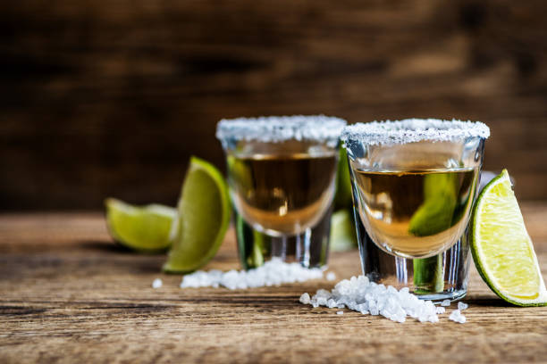

Whiskey
Whiskey is a type of distilled alcoholic beverage made from fermented grain mash.
Gin
Gin is a distilled alcoholic drink that derives its flavour from juniper berries and other botanical ingredients.

TEQUILA
Tequila is a distilled spirit made from the blue Agave or Agave Azul.
VODKA
Vodka is a distilled spirit made from grain - rye.